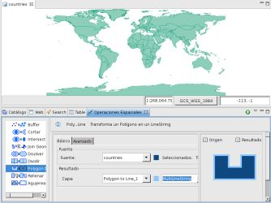
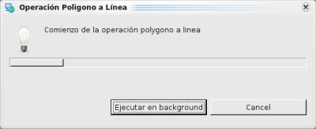
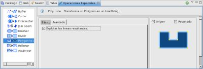
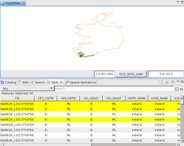

{kind=link}

Figura 2. Definir las capas de entrada y resultante.
Transforma una capa polígono en una capa de tipo lineString.
La operación Polygon to Line obtiene los features de la capa fuente y los transforma en features lineString.
La capa resultante sera del tipo de geometría LineString o MultiLineString, depende en la capa de origen, y puede ser una nueva capa o una existente.
En este ejemplo vamos a realizar la operación Polygon to Line con la capa countries.shp.

Figura 1. Antes de la operación.
Nos dirigimos a la Vista de Operaciones Espaciales, y seleccionamos Polygon to Line en el menú de Operaciones.
Aparecen las opciones específicas de la Operación Polygon to Line.
Debemos indicar los valores de entrada de la operación, como se muestra en la Figura 2:
Figura 2. Definir las capas de entrada y resultante.

Figura 3. Diálogo de progreso.
Una vez que finaliza la Operación, si se creó una nueva capa para almacenar el resultado, ésta será automáticamente añadida al Mapa actual.
La Figura 4 muestra la recién creada Capa (Polygon to Line_1) añadida al mapa, con los Features resultantes de aplicar la transformación de la capa fuente.

Figura 4. Capa Resultado.
La operación Polygon to Line tiene la opción de explotar los polígonos, es decir, cada segmento de linea del polígono sera un feature LineString.

Figura 5. Seleccionar explotar.
En este caso, seleccionamos el pais Irlanda, y despues de chekear la opción de explotar, ejecutamos la operación dandonos como resultado lo siguiente:

Figura 6. Lineas explotadas
{kind=link}
{kind=link}
{kind=link}